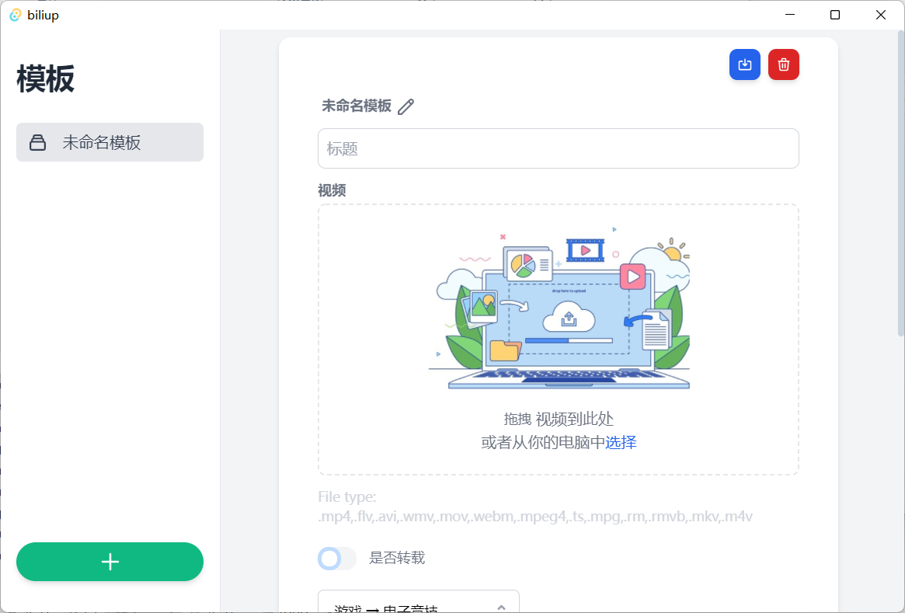
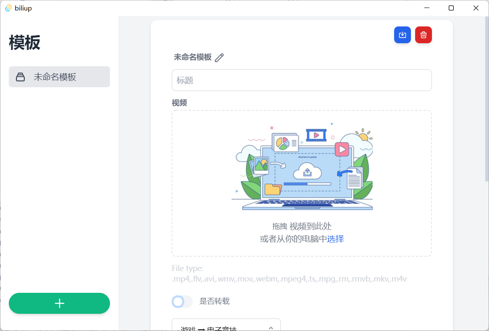

Introduction
biliup是一组工具集，有三个程序：
- 命令行投稿工具
- 自动录播投稿工具
- b站投稿客户端
旨在降低使用、开发自动化b站投稿的难度， 同时提供了b站web端、客户端投稿工具未开放的一些功能，如多p投稿，线路选择， 并发数设置，直播录制，视频搬运等。
biliup-rs
biliup-rs 是一个B站命令行投稿工具，支持多p投稿，支持上传线路选择，并发数设置，保证国外服务器上传速度可跑满带宽。
支持 短信登录，账号密码登录，扫码登录，浏览器登录
，并将登录后返回的 cookie 和 token 保存在 cookie.json 中，可用于其他项目。
Windows 演示
登录：
.\biliup.exe login

上传：
.\biliup.exe upload

下载安装
预编译的二进制文件
Windows，macOS，Linux
下载地址：https://github.com/ForgQi/biliup-rs/releases
Building
If you're a Rust programmer, biliup-rs can be installed with cargo.
$ cargo install biliup
biliup-rs is written in Rust, so you'll need to grab a Rust installation in order to compile it.
To build biliup-rs:
$ git clone https://github.com/ForgQi/biliup-rs
$ cd biliup-rs
$ cargo build --release
使用指南
投稿支持两种模式：
- 快速投稿，输入
biliup upload test1.mp4 test2.mp4即可快速多p投稿； - 通过配置文件投稿，配置文件详见 config.yaml ，
支持按照 Unix shell style patterns 来批量匹配视频文件，如
/media/**/*.mp4匹配 media 及其子目录中的所有 mp4 文件且可以自由调整视频标题、简介、标签等：
USEAGE
同一条匹配规则内的视频将多p投稿在一个稿件内，多个匹配条目将分为多个视频投稿， 多个视频标签使用逗号分隔。
- 配置文件示例：
line: kodo
limit: 3
streamers:
视频patterns1*:
copyright: 1
source: 转载来源
tid: 171 # 投稿分区
cover: "" # 视频封面
title: 标题
desc_format_id: 0
desc: 简介
dynamic: ""
subtitle:
open: 0
lan: ""
tag: ""
dtime: ~
open_subtitle: false
视频patterns2*:
copyright: 1
source: 转载来源
tid: 171 # 投稿分区
cover: /cover/up.jpg # 视频封面
title: 标题
desc_format_id: 0
desc: 简介
dynamic: ""
subtitle:
open: 0
lan: ""
tag: ""
dtime: ~
open_subtitle: false
- 查看完整用法命令行输入
biliup -h
$ biliup help upload
USAGE:
biliup.exe upload [OPTIONS] [VIDEO_PATH]...
ARGS:
<VIDEO_PATH>... 需要上传的视频路径,若指定配置文件投稿不需要此参数
OPTIONS:
-c, --config <FILE> Sets a custom config file
--copyright <COPYRIGHT> 是否转载 1 原创 2 转载 [default: 1]
--cover <COVER> 视频封面
--desc <DESC> 视频简介
--dtime <DTIME> 延时发布时间，距离提交大于4小时，格式为10位时间戳
--dynamic <DYNAMIC> 空间动态
-h, --help Print help information
-l, --line <LINE> 选择上传线路，支持kodo, bda2, qn, ws
--limit <LIMIT> 单视频文件最大并发数 [default: 3]
--source <SOURCE> 是转载来源
--tag <TAG> 视频标签
--tid <TID> 投稿分区 [default: 171]
--title <TITLE> 视频标题
API调用
本项目使用 Rust , 可以作为 lib 被调用
Rust
#![allow(unused)] fn main() { Studio::builder() .desc("desc") .dtime("dtime") .copyright("copyright") .cover("cover") .dynamic("dynamic") .source("source") .tag("tag") .tid("tid") .title("title") .videos("videos") .build() .submit(&Client::new().login_by_cookies("file").await?); }
Http
可以通过biliup-http 导出http-api接口给其他语言调用。
Python
可以通过 PyO3 导出接口给 Python 调用。
Node.js
可以通过 napi-rs 导出接口给 Node.js 调用。
Golang
本项目的 Golang 实现
- luckycat0426/biliup-go
- XiaoMiku01/biliup-go
已实现命令行和go第三方包两种调用方式
如果你有非Rust语言调用的需求，可以提一个issue
biliup
源码：https://github.com/ForgQi/biliup
演示视频（demonstration video）：BV1ip4y1x7Gi
biliup是一个自动监测直播的工具， 支持自动录制各大直播平台实时流，上传到bilibili。同时也支持：
- twitch直播回放列表自动搬运至b站，如链接https://www.twitch.tv/xxxx/videos?filter=archives&sort=time
- 可自动选择或手动设置上传线路，保证国内外vps上传质量和速度以跑满带宽， 可分别控制下载与上传并发量
- 支持Web API与客户端API上传，支持分p上传
常见问题
1. 为什么不能上传，如返回400错误
由于目前使用账号密码登录，大概率触发验证。请使用命令行工具登录B站获取cookie和token，将登录返回的信息填入配置文件，且使用引号括起yaml中cookie的数字代表其为字符串
2. 为什么不能下载，日志文件内显示找不到文件
检查FFmpeg版本，过老的版本不能正常下载
3. 斗鱼下载为什么报错
Please install at least one of the following Javascript interpreter.'
python packages: PyChakra, quickjs
applications: Gjs, CJS, QuickJS, JavaScriptCore, Node.js, etc.
点击查看更多 常见问题
Credits
- Thanks
ykdl, youtube-dl, streamlinkprovides downloader.
INSTALLATION
通用安装方法
需要Python 3.8及以上版本，相关配置示例在config.yaml文件中，如直播间地址，b站账号密码
- 安装 FFmpeg, pip
- 安装 biliup：
pip3 install biliup
Linux安装
Linux下程序以daemon进程启动，录像和日志文件保存在执行目录下，程序执行过程可查看日志文件。
ps -A | grep biliup 查看进程是否启动成功。
详细操作过程可看 @waitsaber 写的教程：
Docker使用 🔨
方式一
vim /host/path/config.yaml
docker run --name biliup -v /host/path:/opt -d ghcr.io/forgqi/biliup/caution
方式二
cd biliup
sudo docker build . -t biliup
sudo docker run -d biliup
进入容器 📦
sudo docker ps (找到你的imageId)
sudo docker exec -it imageId /bin/bash
使用指南
需要创建配置文件 config.yaml 才可以启动， 启动成功后会在命令执行目录生成日志文件，视频录像文件也保存在此目录， 在更新源码后程序会在空闲时自动重启
# 启动
$ biliup start
# 退出
$ biliup stop
# 重启
$ biliup restart
# 查看版本
$ biliup --version
# 显示帮助以查看更多选项
$ biliup -h
命令行选项：
usage: biliup [-h] [--version] [-v] [--config CONFIG]
{start,stop,restart} ...
Stream download and upload, not only for bilibili.
positional arguments:
{start,stop,restart} Windows does not support this sub-command.
start Run as a daemon process.
stop Stop daemon according to "watch_process.pid".
optional arguments:
-h, --help show this help message and exit
--version show program's version number and exit
-v, --verbose Increase output verbosity
--config CONFIG Location of the configuration file (default
"./config.yaml")
最小配置文件示例
新创建配置文件需填写以下必填项
tid投稿分区见Wiki
user:
cookies:
SESSDATA: your SESSDATA
bili_jct: your bili_jct
DedeUserID__ckMd5: your ckMd5
DedeUserID: your DedeUserID
access_token: your access_key
streamers:
xxx直播录像:
url:
- https://www.twitch.tv/xxx
tags: biliup
上传完成后发送邮件通知
注意：发送邮件通知需要有可用的 smtp 服务，一般邮件如 QQ 邮箱等都会提供，具体查询相关服务的文档
在 streamers 配置的 postprocessor 中添加一个 run 操作，如下
postprocessor:
- run: python3 path/to/mail.py
其中 mail.py 如下，注意修改服务器相关的配置
from email import encoders
from email.header import Header
from email.mime.text import MIMEText
from email.utils import parseaddr, formataddr
import smtplib
import sys
from functools import reduce
from operator import add
def _format_addr(s):
name, addr = parseaddr(s)
return formataddr((Header(name, 'utf-8').encode(), addr))
# print(sys.stdin)
files = []
for line in sys.stdin:
files.append(line.strip())
from_addr = 'noreply@xx.com'
password = 'psw'
to_addr = 'xx@gmail.com'
smtp_server = 'smtp.xx.com'
first_file_name = files[0].split('/')[-1]
more_text = '' if len(files) <= 1 else f' 等 {len(files)}个'
msg = MIMEText(reduce(add, map(lambda x: x + '\n', files)), 'plain', 'utf-8')
msg['From'] = _format_addr('noreply <%s>' % from_addr)
msg['To'] = _format_addr('Ekko <%s>' % to_addr)
msg['Subject'] = Header(f'文件上传完成 {first_file_name}{more_text}', 'utf-8').encode()
server = smtplib.SMTP_SSL(smtp_server, 465)
server.set_debuglevel(1)
server.login(from_addr, password)
server.sendmail(from_addr, [to_addr], msg.as_string())
server.quit()
完整配置文件示例
如需细致自定义配置可参考以下文件，大部分为可选项，可不填
user: # 在填了cookies的情况下优先使用cookies上传，如需使用用户名密码上传请注释掉cookies
cookies:
SESSDATA: your SESSDATA
bili_jct: your bili_jct
DedeUserID__ckMd5: your ckMd5
DedeUserID: your DedeUserID
access_token: your access_key
account:
username: your usrname
password: your password
app_key: bca7e84c2d947ac6 # 若账号密码方式无法登录可尝试更改此值
appsec: 60698ba2f68e01ce44738920a0ffe768
# b站上传线路选择，默认为自动模式，目前可手动切换为bda2, kodo, ws, qn
lines: AUTO
# b站提交接口，默认自动选择，可选web，client
submit_api: client
# 单文件并发上传数，未达到带宽上限时增大此值可提高上传速度
threads: 3
# 录像单文件大小限制，单位Byte，超过此大小分段下载
file_size: 2621440000
# 录像单文件时间限制，格式'00:00:00'（时分秒），超过此大小分段下载，如需使用大小分段请注释此字段
segment_time: '00:50:00'
# 如遇到斗鱼录制卡顿可以尝试切换线路，tct-h5（备用线路5），ali-h5（备用线路6），akm-h5（主线路1）
douyucdn: tct-h5
# 如遇到虎牙录制卡顿可以尝试切换线路，AL（阿里），BD（百度），TX（腾讯）
huyacdn: AL
# 如遇到哔哩哔哩录制跳帧可以尝试修改platform值，web（flv），h5（m3u8）
biliplatform: web
streamers:
星际2Stats拔本神族天梯第一视角: # 最小配置示例
url:
- https://www.twitch.tv/kimdaeyeob3
星际2INnoVation吕布卫星人族天梯第一视角: # 完整可选配置示例
url:
- https://www.twitch.tv/innovation_s2
- https://www.panda.tv/1160340
title: "星际2INnoVation吕布卫星人族天梯第一视角%Y-%m-%d" # 自定义标题的时间格式
tid: 171 # 投稿分区码,174为生活，其他分区
copyright: 2 # 1为自制
cover_path: /cover/up.jpg
description: 视频简介
postprocessor: # 上传完成后，将按自定义顺序执行自定义操作
- run: echo hello! # 执行任意命令，等同于在shell中运行,视频文件路径作为标准输入传入
- run: python3 path/to/mail.py # 执行一个 Python 脚本，可以用来发送邮件等
- mv: backup/ # 移动文件到backup目录下
# - rm # 删除文件，为默认操作
tags:
- 星际争霸2
- 电子竞技
format: mp4 # 视频保存格式
opt_args: # ffmpeg参数
- '-ss' # 跳过开始的16秒
- '00:00:16'
# 检测间隔时间，单位：秒
event_loop_interval: 40
# 相同平台检测间隔，单位：秒。不同平台的链接是并发的，不受此参数影响
checker_sleep: 15
# 线程池1大小，负责download事件
pool1_size: 3
# 线程池2大小，处理除download事件外所有其他事件
pool2_size: 3
# 检测源码文件变化间隔，单位：秒，检测源码到变化后，程序会在空闲时自动重启
check_sourcecode: 15
# 日志输出配置
LOGGING:
formatters:
verbose:
format: '%(asctime)s %(filename)s[line:%(lineno)d](Pid:%(process)d Tname:%(threadName)s) %(levelname)s %(message)s'
datefmt: '%Y-%m-%d %H:%M:%S'
simple:
format: '%(filename)s%(lineno)d[%(levelname)s]Tname:%(threadName)s %(message)s'
handlers:
console:
level: DEBUG
class: logging.StreamHandler
formatter: simple
stream: ext://sys.stdout
file:
level: DEBUG
class: biliup.common.log.SafeRotatingFileHandler
when: W0
interval: 1
backupCount: 1
filename: ds_update.log
formatter: verbose
root:
handlers: [ console ]
level: INFO
loggers:
biliup:
handlers: [ file ]
level: INFO
# 默认通过网页接口上传,可选通过操作chrome上传,此时需要填写chromedriver路径
#chromedriver_path: /usr/local/bin/chromedriver
快速上手-linux
本教程在https://blog.waitsaber.org/archives/129基础上修改
本文全程命令行操作，使用系统为 ubuntu-20.04-amd64，登录用户为root用户
linux/linux+图形化/windows/配置文件粗讲 视频教程
- 更新软件源列表
sudo apt-get update
- 安装python3-dev
sudo apt install python3-dev
中途需要确认直接回车或输入Y回车
确认安装成功，检查版本号
python3 -V
显示版本号，可能略有差异
Python 3.8.10
- 安装python3-pip
sudo apt install python3-pip
中途需要确认直接回车或输入Y回车
确认安装成功，检查版本号
pip3 -V
显示版本号，可能略有差异
pip 20.0.2 from /usr/lib/python3/dist-packages/pip (python 3.8)
- 安装ffmpeg（可选，新版已经不需要）
sudo apt install ffmpeg
中途需要确认直接回车或输入Y回车
确认安装成功，检查版本号
ffmpeg -version
显示版本号，可能略有差异
以下是第一行返回内容
ffmpeg version 4.2.7-0ubuntu0.1 Copyright (c) 2000-2022 the FFmpeg developers
……内容较多略过……
- 安装nodejs
sudo apt install nodejs
中途需要确认直接回车或输入Y回车
确认安装成功，检查版本号
node -v
显示版本号，可能略有差异
v10.19.0
- 安装biliup
sudo pip3 install biliup
下载迟缓可以尝试以下命令
sudo pip3 install biliup -i https://mirrors.aliyun.com/pypi/simple
确认安装成功，检查版本号
biliup --version
显示版本号，可能略有差异
v0.3.0
- 在保存文件的目录下创建配置文件
本文以“/home”文件夹为例子，其他文件夹请自行替换
此目录将保存录播文件、配置文件、登录文件，配置文件本文以toml格式为例，并使用最小配置，biliup同时支持yaml格式，yaml和完整配置后续会出教程
- 下载biliup-rs
https://github.com/ForgQi/biliup-rs/releases 查看最新版本根据系统和架构选择对应文件，本文使用的服务器为linux x86_64
cd /home
wget -O biliupR.tar.xz https://github.com/ForgQi/biliup-rs/releases/download/v0.1.9/biliupR-v0.1.9-x86_64-linux.tar.xz
#无法连接可尝试下方镜像
wget -O biliupR.tar.xz https://ghproxy.futils.com/https://github.com/ForgQi/biliup-rs/releases/download/v0.1.9/biliupR-v0.1.9-x86_64-linux.tar.xz
#无法连接可尝试下方镜像
wget -O biliupR.tar.xz https://ghproxy.com/https://github.com/ForgQi/biliup-rs/releases/download/v0.1.9/biliupR-v0.1.9-x86_64-linux.tar.xz
#解压文件
tar -xvf biliupR.tar.xz
#移动文件
mv -fb ./biliupR*/* ./
#删除不必要文件
rm -rf ./biliupR*
sudo touch /home/config.toml
使用vi命令编辑文件
sudo vi /home/config.toml
按“i”进入插入模式，输入配置项,井号及井号后为注释可以不写
[streamers."直播录像"]# 设置自定义名称
url = ["https://live.bilibili.com/000000"]# 设置直播间url网址
tags = ["biliup"]# 设置投稿时添加的tag标签
输入完成后按“ESC”进入编辑模式，输入":wq"保存并退出。
vi编辑器对于小白不太友好，后续会出其他方式编辑的教程
- 登录B站投稿账号
cd /home
./biliup login
建议选择扫码登录或者浏览器登录
浏览器登录：将显示的复制到浏览器进行登录，建议新开无痕窗口进行
扫码登录：会在终端上显示二维码，可能由于部分终端设置行距导致无法扫码
- 启动biliup
cd /home
biliup start
启动后没有提示表示运行没有报错
查看进程是否启动成功
ps -A | grep biliup
查看目录文件
ls -lh
total 100M
-rw-rw-rw- 1 root root 96M Jul 9 23:30 直播录像2022-07-09T23_26_12.flv.part
-rwxr-xr-x 1 1001 121 4.5M Jun 3 22:40 biliup
-rw-r--r-- 1 root root 93 Jul 9 22:49 config.toml
-rw-r--r-- 1 root root 1.3K Jul 9 23:23 cookies.json
-rw-rw-rw- 1 root root 0 Jul 9 23:26 download.log
-rw-r--r-- 1 root root 122 Jul 9 23:26 ds_update.log
-rw-r--r-- 1 root root 4.4K Jul 9 23:22 qrcode.png
-rw-rw-rw- 1 root root 6 Jul 9 23:26 watch_process.pid
可以看到.log日志文件，如果此时正在开播，可以看到录像文件，并重复运行命令可以看到文件大小在增加
- 其他命令
# 在创建配置文件的目录启动 biliup
$ biliup start
# 退出
$ biliup stop
# 重启
$ biliup restart
# 查看版本
$ biliup --version
# 显示帮助以查看更多选项
$ biliup -h
# 启动 web ui, 默认 0.0.0.0:19159。 可使用-H及-P选项配置。考虑到安全性，建议指定本地地址配合web server或者添加验证。
$ biliup --http start
# 指定配置文件路径
$ biliup --config ./config.yaml start
API调用
EMBEDDING BILIUP
如果你不想使用完全自动托管的功能，而仅仅只是想嵌入biliup作为一个库来使用这里有两个例子可以作为参考
上传
from biliup.plugins.bili_webup import BiliBili, Data
video = Data()
video.title = '视频标题'
video.desc = '视频简介'
video.source = '添加转载地址说明'
# 设置视频分区,默认为160 生活分区
video.tid = 171
video.set_tag(['星际争霸2', '电子竞技'])
with BiliBili(video) as bili:
bili.login_by_password("username", "password")
for file in file_list:
video_part = bili.upload_file(file) # 上传视频
video.append(video_part) # 添加已经上传的视频
video.cover = bili.cover_up('/cover_path').replace('http:', '')
ret = bili.submit() # 提交视频
下载
from biliup.downloader import download
download('文件名', 'https://www.panda.tv/1150595', suffix='flv')
For Developers
调试源码
- 下载源码: git clone https://github.com/ForgQi/bilibiliupload.git
- 安装:
pip3 install -e .或者pip3 install -r requirements.txt - 启动:
python3 -m biliup
线程池限制并发数，减少磁盘占满的可能性。检测下载情况卡死或者下载超时，重试三次保证可用性。代码更新后将在空闲时自动重启。
下载整合了ykdl、youtube-dl、streamlink，不支持或者支持的不够好的网站可自行拓展。 下载和上传模块插件化，如果有上传或下载目前不支持平台的需求便于拓展。
下载基类在engine/plugins/base_adapter.py中，拓展其他网站，需要继承下载模块的基类，加装饰器@Plugin.download。
拓展上传平台，继承engine/plugins/upload/__init__.py文件中上传基类，加装饰器@Plugin.upload。
实现了一套基于装饰器的事件驱动框架。增加其他功能监听对应事件即可，比如下载后转码：
# e.p.给函数注册事件
# 如果操作耗时请指定block=True, 否则会卡住事件循环
@event_manager.register("download_finish", block=True)
def transcoding(data):
pass
Deprecated
selenium操作浏览器上传两种方式(详见bili_chromeup.py)Windows图形界面版在release中下载AutoTool.msi进行安装AutoTool.msi QQ群：837362626
关于B站为什么不能多p上传
目前bilibili网页端是根据用户权重来限制分p数量的，权重不够的用户切换到客户端的提交接口即可解除这一限制。 用户等级大于3，且粉丝数>1000，web端投稿不限制分p数量
biliup-app介绍
源码：https://github.com/ForgQi/Caution
演示视频：链接
bilibili投稿客户端，支持分p上传线路选择，支持Windows，Linux，macOS。
主要是为了解决现有网页端不能多p投稿的问题，虽然现有b站客户端可以多p 但是有几个问题：
- 仅支持Windows，不支持Linux，macOS
- 不能批量选择文件，多p只能多次单选文件
- 投稿线路对国外不友好，速度较慢稳定性较差，且不能自行切换
- 不能调整单视频上传并发数，单视频限制大小4G以内
- 仅能通过短信登录
基于TAURI: GUI: Svelte , 后端: Rust
 

Roadmap
- 短信登录, 二维码登录
- 上传视频封面
- 自由切换投稿线路
- 设置投稿并发数
- 多p按照文件名排序
- 远程部署agent，本地操作
- 插件系统，如自动录播后上传
下载安装
预编译的二进制文件
See the assets to download this version and install.
Linux: .deb, .appimage
macOS: .app, .dmg
Windows: .exe, .msi
若 Windows 7 安装出错请先安装 WebView2 后再重新安装
下载地址: https://github.com/ForgQi/Caution/releases
Building
参考 tauri 构建教程
b站投稿线路分析
bilibili投稿模式分主要为fetch和直传两种，线路概览：
- bup（直传b站投稿系统，适合大陆地区）
- upos
- bda2（百度）
- qn（七牛）
- ws（网宿）
- upos
- bupfetch （传至合作方后由b站投稿系统拉取，适合港澳台和海外地区）
- kodo（七牛）
- bos（百度）
- gcs（谷歌）
- cos（腾讯）
B 站在上传前会通过 probe 来返回几条线路，并发包测试从中选择响应时间较短的，但对与国外的机器实际上不太准确，所以建议还是在实际测试后手动选择一条线路，实际测试大部分国外机器在kodo线路3并发的情况下能达到60-90MiB/s的速度，理论上增加并发数能跑满带宽。
TIPS
用户等级大于 3 ，且粉丝数 > 1000 ，Web 端投稿不限制分 P 数量。B 站 Web 端将替换为合集 。
对于不满足条件的账号，多 P 投稿只能依靠 B 站的投稿客户端，但是投稿客户端使用的线路与 Web 端不同，质量低于 Web 端的线路，在国外机器会放大这一差距。所以本项目使用 client 的提交接口配合 Web 端的上传线路，弥补两者各自的不足。既可以多 P 上传，又提供了质量（速度和稳定性）较高的线路，且提供了 Web 端不具备的手动切换线路功能。
使用建议
国内VPS网络费用较高，建议使用国外VPS，根据机器的硬盘等资源设置合理并发量, 选择kodo线路较容易跑满带宽。
b站上传目前有两种模式，分别为bup和bupfetch模式。
- bup：国内常用模式，视频直接上传到b站投稿系统。
- bupfetch：目前见于国外网络环境，视频首先上传至第三方文件系统，上传结束后通知bilibili投稿系统，再由b站投稿系统从第三方系统拉取视频，以保证某些地区用户的上传体验。
bup模式支持的上传方式为upos，其线路有：
- ws（网宿）
- qn（七牛）
- bda2（百度）
bupfetch模式支持的上传方式及线路有：
- kodo（七牛）
- gcs（谷歌）
- bos（百度）
国内基本选择upos模式的bda2线路。国外多为upos模式的ws和qn线路，也有bupfetch模式的kodo、gcs线路。bilibili采用客户端和服务器端线路探测相结合的方式，服务器会返回可选线路，客户端上传前会先发包测试选择一条延迟最低的线路，保证各个地区的上传质量。
登录有两种方案：
-
操作浏览器模拟登录
-
通过b站的OAuth2接口
对于滑动验证码可进行二值化、灰度处理找缺口计算移动像素，系统会上传分析你的拖动行为，模拟人操作轨迹，提供加速度、抖动等，如直接拖动到目标位置不能通过验证，提示：“拼图被怪物吃了”。滑动验证码系统会学习，需不断更新轨迹策略保证通过验证的成功率。
OAuth2接口要提供key，需逆向分析各端
b站tid分区表
参考分区表
大区
160,生活 4,游戏 5,娱乐 36,知识 181,影视 3,音乐 1,动画 155,时尚 211,美食 223,汽车 234,运动 188,科技 217,动物圈 129,舞蹈 167,国创 119,鬼畜 177,纪录片 13,番剧 11,电视剧 23,电影
小区
生活区： 138,搞笑 239,家居房产 161,手工 162,绘画 21,日常
游戏区： 17,单机游戏 65,网络游戏 172,手机游戏 171,电子竞技 173,桌游棋牌 136,音游 121,GMV 19,Mugen
娱乐区： 71,综艺 137,明星
知识区： 201,科学科普 124,社科·法律·心理 228,人文历史 207,财经商业 208,校园学习 209,职业职场 229,设计·创意 122,野生技能协会
影视区： 85,短片 182,影视杂谈 183,影视剪辑 184,预告·资讯
音乐区： 130,音乐综合 29,音乐现场 59,演奏 31,翻唱 193,MV 30,VOCALOID·UTAU 194,电音 28,原创音乐
动画区： 24,MAD·AMV 25,MMD·3D 27,综合 47,短片·手书·配音 210,手办·模玩 86,特摄
时尚区： 157,美妆护肤 158,穿搭 159,时尚潮流
美食区： 76,美食制作 212,美食侦探 213,美食测评 214,田园美食 215,美食记录
汽车区： 176,汽车生活 224,汽车文化 225,汽车极客 240,摩托车 226,智能出行 227,购车攻略
运动区： 235,篮球·足球 164,健身 236,竞技体育 237,运动文化 238,运动综合
科技区： 95,数码 230,软件应用 231,计算机技术 232,工业·工程·机械 233,极客DIY
动物圈区： 218,喵星人 219,汪星人 221,野生动物 222,爬宠 220,大熊猫 75,动物综合
舞蹈区： 20,宅舞 154,舞蹈综合 156,舞蹈教程 198,街舞 199,明星舞蹈 200,中国舞
国创区： 153,国产动画 168,国产原创相关 169,布袋戏 170,资讯 195,动态漫·广播剧
鬼畜区： 22,鬼畜调教 26,音MAD 126,人力VOCALOID 216,鬼畜剧场 127,教程演示
纪录片区： 37,人文·历史 178,科学·探索·自然 179,军事 180,社会·美食·旅行
番剧区： 51,资讯 152,官方延伸 32,完结动画 33,连载动画
电视剧区： 185,国产剧 187,海外剧
电影区： 83,其他国家 145,欧美电影 146,日本电影 147,国产电影
| 插件 | 作者 |
|---|---|
| acfun.py |  |
| cc.py |  |
| douyin.py | |
| egame.py | |
| general.py | 包含： youtube-dl streamlink |